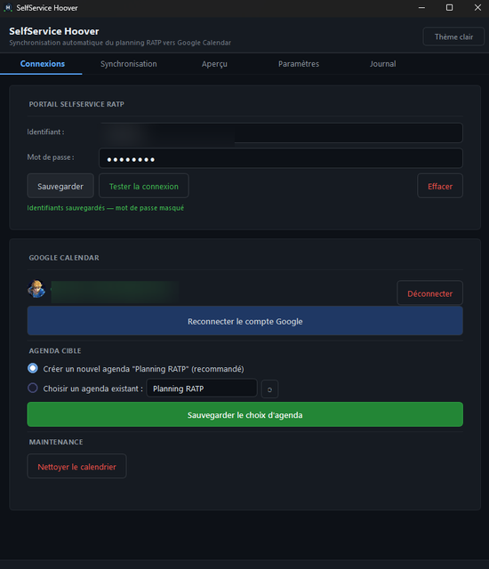
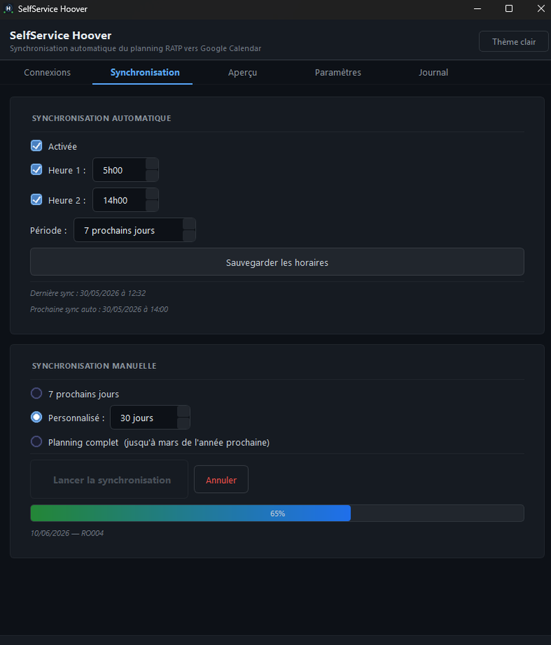
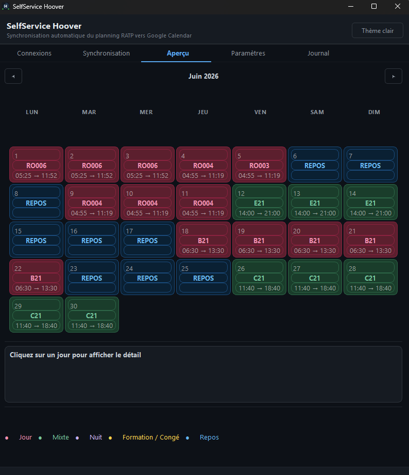
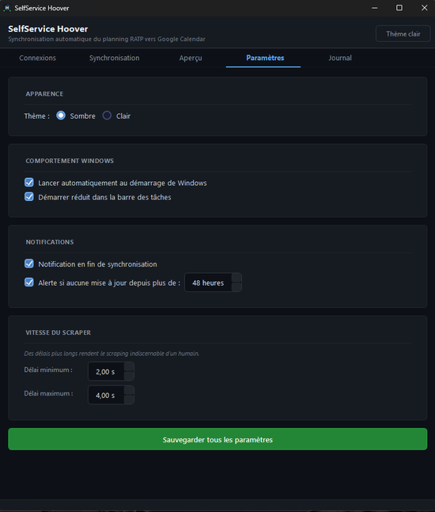
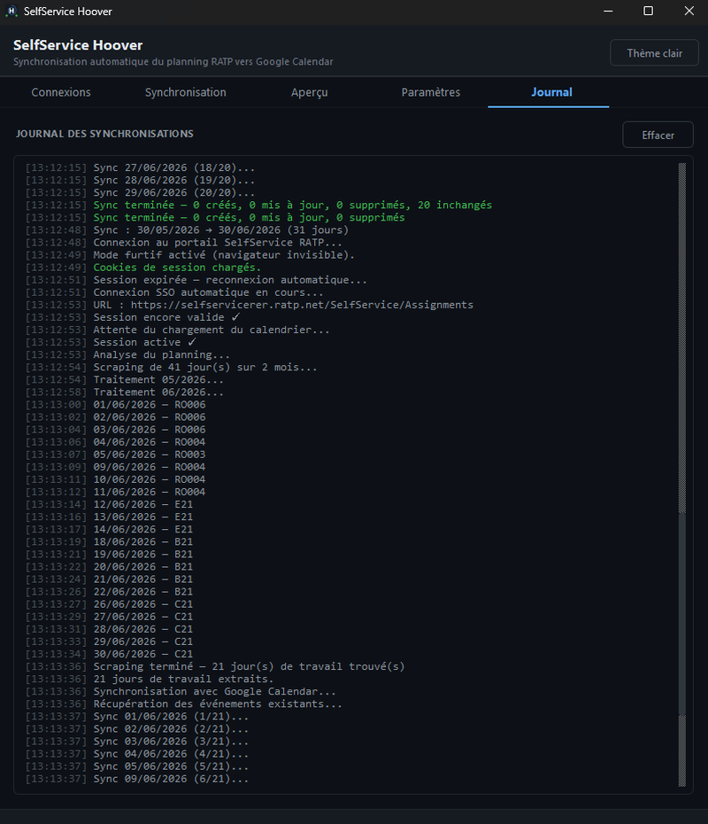
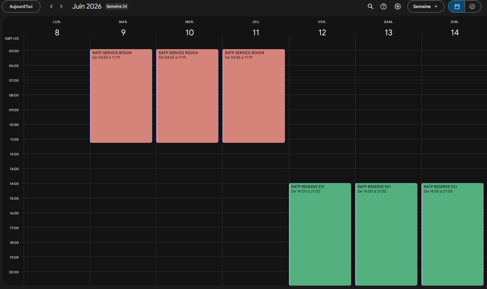
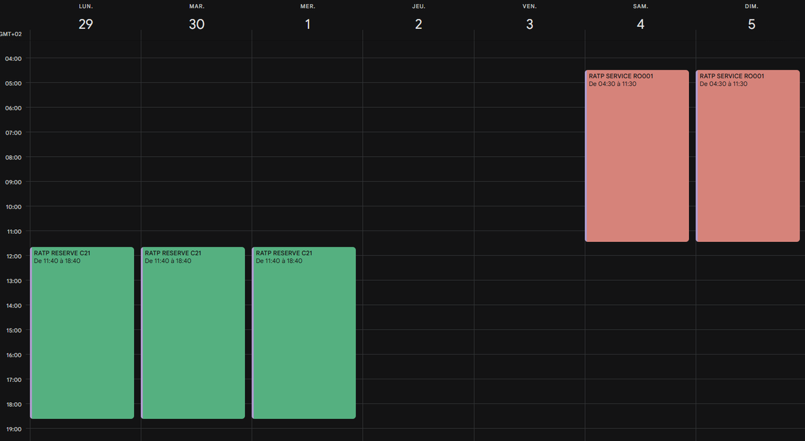

Synchronisez automatiquement votre planning RATP depuis le portail SelfService vers Google Calendar — sans rien faire, deux fois par jour.
Windows 10 / 11 · Compte RATP requis · Aucune installation
Le logiciel se synchronise automatiquement à 5h et 14h chaque jour, en tâche de fond. Votre agenda est toujours à jour sans intervention.
L'onglet Aperçu affiche votre planning mensuel avec un code couleur par type de service — Jour, Nuit, Mixte, Formation, Repos.
La récupération du planning se fait via un navigateur invisible. Aucune fenêtre ne s'ouvre pendant la synchronisation.
Vos identifiants RATP et le token Google sont stockés dans Windows Credential Manager. Aucune donnée n'est envoyée à un serveur tiers.
Interface

Connexions — Identifiants RATP · Compte Google · Agenda cible

Synchronisation — Horaires auto · Plage manuelle · Barre de progression

Aperçu — Calendrier mensuel avec code couleur par type de service

Paramètres — Apparence · Démarrage Windows · Notifications · Vitesse scraper

Journal — Logs de synchronisation horodatés en temps réel

Google Calendar — Services RO004 et E21 synchronisés (semaine 24)

Google Calendar — Services C21 et RO001 synchronisés (semaine 22)
Documentation
Tout ce qu'il faut savoir pour installer et utiliser SelfService Hoover.
SelfService Hoover est un logiciel Windows qui récupère automatiquement votre planning de travail RATP depuis le portail SelfService (GIRO) et le synchronise avec votre Google Calendar.
Une fois configuré, le logiciel tourne en arrière-plan et met à jour votre agenda automatiquement deux fois par jour (5h et 14h), sans que vous ayez à faire quoi que ce soit.
Connectez votre compte portail SelfService RATP pour que le logiciel puisse récupérer votre planning.
Autorisez le logiciel à accéder à votre Google Calendar via OAuth2 (aucun mot de passe Google n'est stocké).
Définissez dans quel agenda Google les événements de travail seront créés.
Créer un nouvel agenda "Planning RATP" — crée un agenda dédié, séparé de votre agenda personnel. Facile à activer/désactiver dans Google Calendar.
Choisir un agenda existant — sélectionnez un agenda existant dans la liste déroulante. Les événements s'y ajouteront directement.
Onglet Synchronisation
Même procédure avec une plage de 7 jours — prend environ 1 à 2 minutes. Idéal pour vérifier que les prochains jours sont bien à jour dans Google Calendar.
Configurez deux horaires (par défaut 5h00 et 14h00) dans la section Synchronisation automatique. Chaque horaire peut être activé/désactivé indépendamment.
Les dates de la dernière sync et de la prochaine sync auto sont affichées en bas de la section pour vérifier que tout tourne correctement.
Onglet Aperçu — Juin 2026
L'onglet Aperçu affiche votre planning sous forme de calendrier mensuel. Naviguez avec les flèches ◀ ▶ pour changer de mois.
Cliquez sur n'importe quel jour pour afficher le détail : code service, type, catégorie, horaires de début/fin.
L'icône en bas à droite de l'écran indique l'état des connexions :
Non. Le navigateur est invisible (mode furtif). Vous verrez uniquement la progression dans l'onglet Journal.
Oui. Ils sont stockés dans Windows Credential Manager, le même système que vos mots de passe Wi-Fi et Windows.
Non, si vous avez choisi "Créer un nouvel agenda Planning RATP". Seul cet agenda dédié est modifié.
Mettez à jour votre mot de passe dans l'onglet Connexions et relancez une synchronisation.
Non. Les congés sont uniquement visibles dans l'aperçu du logiciel (en jaune). Seuls les jours de travail sont exportés vers Google Calendar.
Non. En dehors des syncs, elle consomme moins de 50 Mo de RAM et quasiment pas de CPU.
Toutes les données sont stockées localement sur votre machine. Aucune donnée n'est envoyée vers un serveur tiers.
Le logiciel communique uniquement avec :
selfservicerer.ratp.netgoogleapis.comSelfService Hoover.exe.%APPDATA%\SelfServiceHoover\ (optionnel).SelfServiceHoover_RATP et SelfServiceHoover_GOOGLE (optionnel).Téléchargement